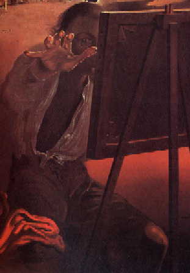

На этой странице собраны все интересные на мой взгляд программы, в разное время разработанные мной.
На этой странице собраны все интересные на мой взгляд программы, в разное время разработанные мной.
|
. . | ||
|
На этой странице собраны все интересные на мой взгляд программы, в разное время разработанные мной.

 "TrayMenu 2.2 (final B)" (Win95; Win NT) Программа создающая всплывающее меню наподобие кнопки "Пуск",
только меню может быть в любом месте экрана, а также в лотке (в месте с часами и переключателем клавиатуры).
Меню, полностью настраиваемое на ваш вкус, в нем могут быть подменю с директориями.
..... (В общем, скачайте себе, не пожалеете, очень удобно) (235К).
"Megapolis NN 0.8" (Dos) Векторная карта Нижнего Новгорода, совместная разработка с Ильей Семеновым (245К).
"NumGrid 1.2" - Объект для дельфи, предназначенный для создания числовых таблиц (8К).
"LN 1.11" (Dos box Win95) Утилита для сохранения - восстановления в файл длинных имен Win'95, например перед архивацией,
удобно использовать вместе с Дос Навигатором,
который вместе с LN можно настроить так, что будут видны длинные имена (9К).
"Hide it" (Win3.1;Win95) Утилита для запуска программ под Windows, так чтобы их не было видно.
Просто укажите запускаемую программу в качестве параметра (5К).
"Trumpet Winsock Hack" (Dos) Программа для вскрытия пароля от Trumpet Winsock, служащего для доступа в Интернет (5К).
Просто в качестве параметра укажите ini-file от Trumpet Winsock.
"Free Clock 0.22" (HTML) Апплет в виде идущих часов для украшения домашних страниц (7К).
"TrayMenu 2.2 (final B)" (Win95; Win NT) Программа создающая всплывающее меню наподобие кнопки "Пуск",
только меню может быть в любом месте экрана, а также в лотке (в месте с часами и переключателем клавиатуры).
Меню, полностью настраиваемое на ваш вкус, в нем могут быть подменю с директориями.
..... (В общем, скачайте себе, не пожалеете, очень удобно) (235К).
"Megapolis NN 0.8" (Dos) Векторная карта Нижнего Новгорода, совместная разработка с Ильей Семеновым (245К).
"NumGrid 1.2" - Объект для дельфи, предназначенный для создания числовых таблиц (8К).
"LN 1.11" (Dos box Win95) Утилита для сохранения - восстановления в файл длинных имен Win'95, например перед архивацией,
удобно использовать вместе с Дос Навигатором,
который вместе с LN можно настроить так, что будут видны длинные имена (9К).
"Hide it" (Win3.1;Win95) Утилита для запуска программ под Windows, так чтобы их не было видно.
Просто укажите запускаемую программу в качестве параметра (5К).
"Trumpet Winsock Hack" (Dos) Программа для вскрытия пароля от Trumpet Winsock, служащего для доступа в Интернет (5К).
Просто в качестве параметра укажите ini-file от Trumpet Winsock.
"Free Clock 0.22" (HTML) Апплет в виде идущих часов для украшения домашних страниц (7К).
|
 |
Наша работа во тьме -
Мы делаем, что умеем,
Мы отдаем, что имеем -
Наша работа - во тьме.
Сомнения стали страстью,
А страсть стала судьбой.
Все остальное - искусство
В безумии быть собой.
С.Лукяненко "Лабиринт отражений"
Агония мыслей дальше..,
Стучание клавиш в ночи.
Зачем нам такое счастье,
Ведь выхода нет из сети.
Усталости нет, нет покоя,
Лишь блеск в покрасневших глазах.
Я.. хакер, я сам не знаю,
Где мне себя отыскать?
Сомнения стали страстью,
Но вера не стала судьбой.
Мы были в аду, и знаем,
Там действуют бензопилой.
Мой бог и мой дьявол со мною,
Пустяк для него мегабайт.
Сольется ли он со мною?
Во тьме - не идут назад.
iLya
|


Created 30'04.97